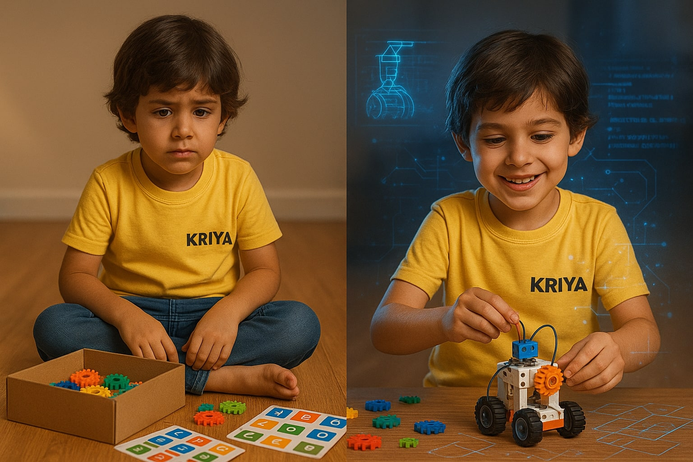
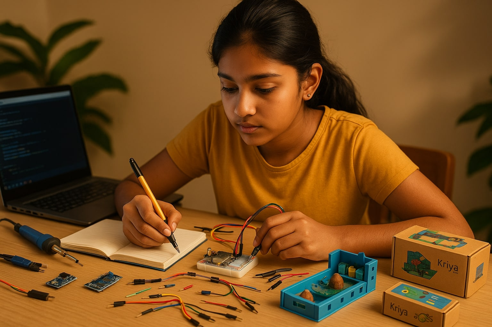
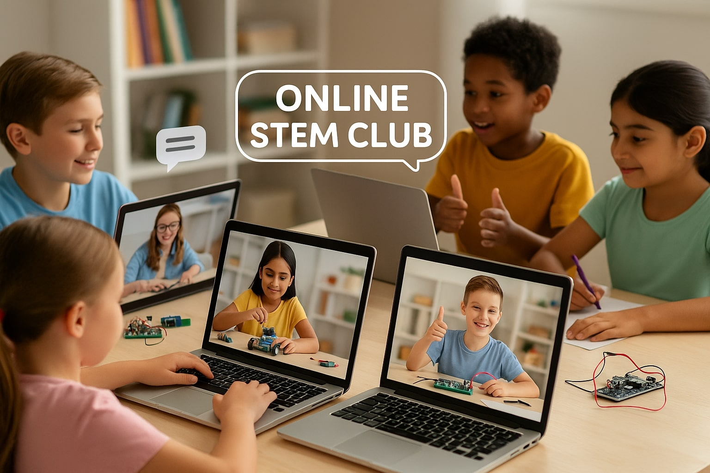
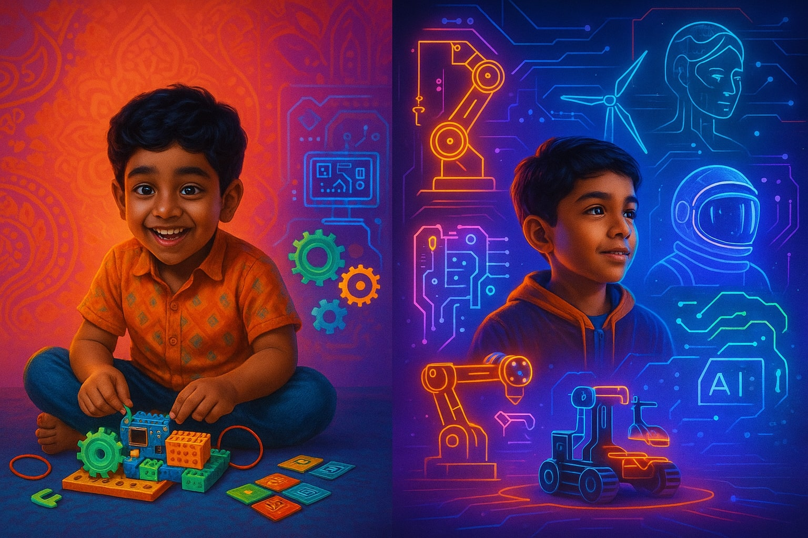

In today’s world, there’s no shortage of STEM toys and DIY kits on the market. A quick online search reveals hundreds of build-it-yourself gadgets promising to teach kids coding, electronics, or robotics in a fun, engaging way. And for a day or two, many of them do just that.
But if you’re a parent, you know what often happens next.
The box gets opened, the project gets built, maybe even played with for a while — and then it gathers dust. The child might enjoy the novelty, but there’s no deeper learning, no growth over time, and certainly no follow-through. The experience ends just as quickly as it began.
That’s where structured STEM learning comes in — and why it’s not just better, but essential.
Let’s start with the basics. A one-off STEM kit typically focuses on a single activity — like building a robot car or a small circuit. It’s usually sold as a standalone product, meant to be completed in a short amount of time. The instructions are often step-by-step, like building furniture from a manual.
That’s great for a quick thrill. But once it’s built, the experience ends. Kids may learn how to assemble that one thing, but they don’t always understand why it works, or how the principles behind it could be used in other contexts.
In contrast, structured STEM learning is a progressive journey. It’s designed to develop a child’s skills over time — not just through repeated practice, but by introducing increasingly complex concepts in a thoughtful, age-appropriate way. Each step builds on the last, reinforcing earlier knowledge while challenging the learner to grow.
It’s the difference between giving a child a puzzle and teaching them how to design their own.

A one-off kit might teach your child how to follow instructions or identify parts, but it rarely teaches them why things work the way they do. There's little room for open-ended exploration or critical thinking. It’s about completion, not comprehension.
Structured STEM learning shifts the focus from short-term excitement to long-term engagement. Kids learn not only to build things, but to question, experiment, and iterate. They gain the confidence to fail and try again — a fundamental trait of every scientist, engineer, and innovator.
They don’t just consume information — they internalize it.
Think of STEM skills like learning a musical instrument. You wouldn’t hand a child a piano for one weekend and expect them to become a musician. You’d start with basic notes, build muscle memory, practice scales, learn to read music, and grow over time.
STEM learning is no different.
A structured program allows for:
One-off kits tend to be passive in nature. Even when they involve building, the path to completion is rigid and pre-defined. There’s little space for kids to make decisions, modify the project, or solve unexpected challenges.
Structured STEM kits encourage creative problem solving. They present kids with real challenges that don’t always have one clear answer. They might need to debug code, redesign a mechanism, or experiment with different inputs. This kind of learning not only builds technical skills — it also fosters resilience, resourcefulness, and confidence.
And let’s not forget the satisfaction kids feel when they realize: “I figured it out myself.”

Another key difference lies in what happens after the kit is built.
One-off kits are usually a solo activity. There’s no follow-up, no space to share or compare, and no motivation to revisit the project.
Structured STEM learning — especially programs that include online communities — keep kids engaged far beyond the build. They can:
This sense of belonging and continuity makes a huge difference. It helps kids feel like they’re part of something bigger — a movement of makers and thinkers like themselves.

STEM isn’t a passing trend. It’s the foundation of tomorrow’s careers — in AI, robotics, space, biotech, green energy, and beyond. Giving kids one-off exposure to STEM is like handing them a calculator and calling them a mathematician.
To truly prepare them for the future, we need to offer ongoing, structured, and meaningful STEM experiences — the kind that teach them how to think, not just what to do.
We at Kriya help your kid in their STEM journey. Check us out here.